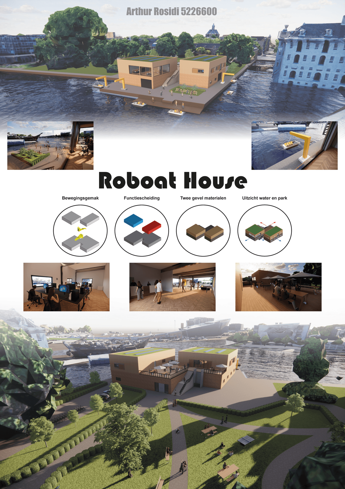
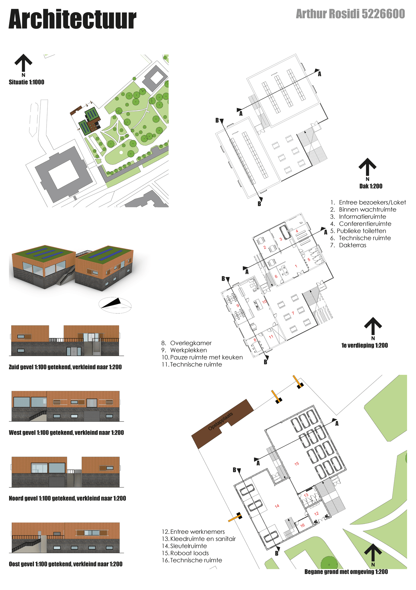
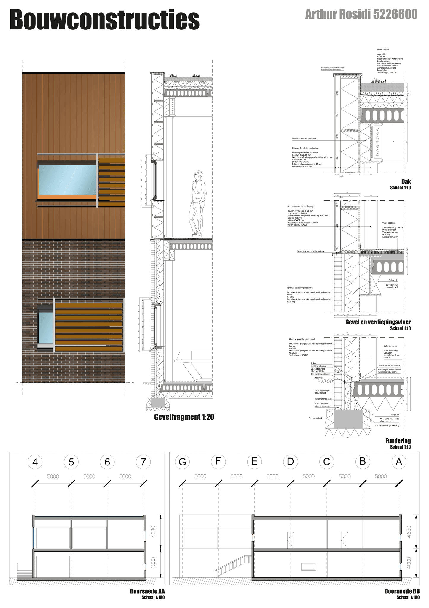
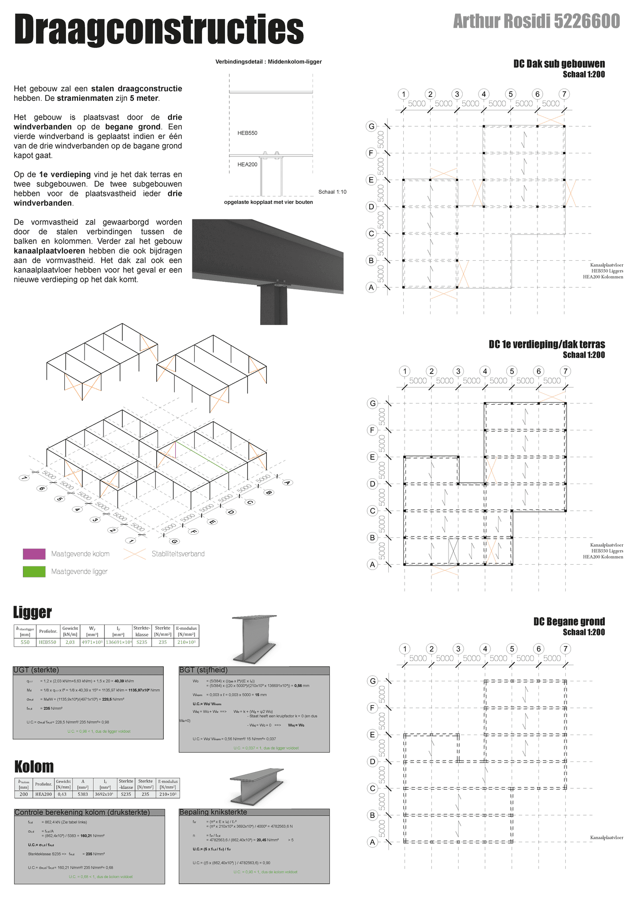
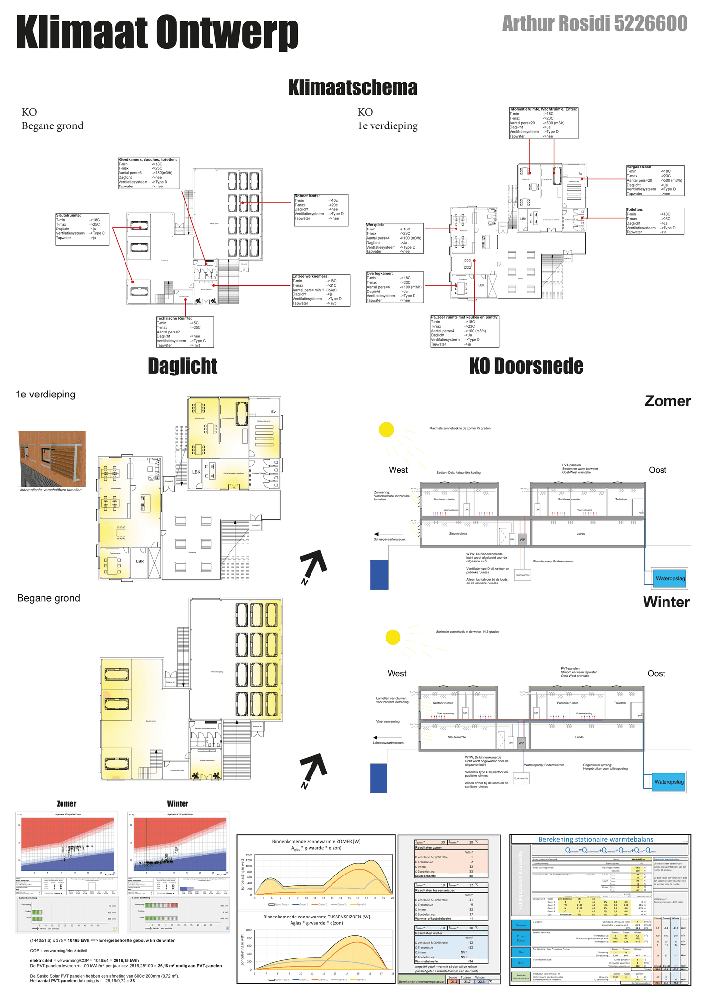

The Roboathouse was my design for BK2ON2, the first bachelor module in which I developed a complete integrated design myself, architecture, structure and climate design combined. The assignment was a home base for Roboat, a research programme by AMS Institute, MIT, TU Delft and Wageningen University, supported by Waternet, the City of Amsterdam and the City of Boston, that tests autonomous boats for transporting people and goods, collecting waste and forming temporary infrastructure on Amsterdam’s canals. The building is located on the Marineterrein near the IJ, close to the maritime museum and Arcam.
The design combines a working side, a docking hall with storage, charging stations and a control room for staff overseeing the boats, with a public side for visitors: an entrance, an exhibition space explaining the Roboat programme, and a conference room, all overlooking the water and the adjacent park. I separated these functions clearly while keeping movement between them easy, and gave the building two façade materials: reused brick at ground level, referencing the site’s maritime history, and timber cladding on the floor above. The structure is a steel frame on a 5-metre grid with wind bracing for stability, topped by a green roof fitted with PVT panels for energy generation.
Tools/Approach:
Rhinoceros, Microsoft Excel, Enscape, ORCA, Site visit
Poster




